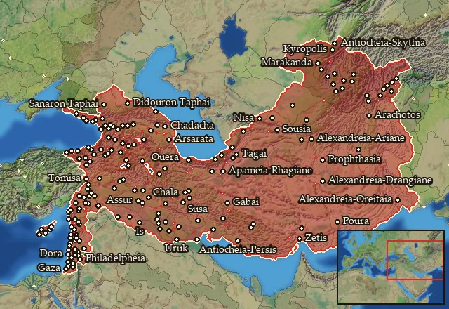

RTR: Imperium Surrectum
RTR: Imperium SurrectumAsia
← all mercenary pools · wiki index
Mercenary pool: 4 units for hire in 176 regions.

Mercenaries
| Unit | Cost (dn) | Experience | At start | Most in pool | Added per turn | Who can hire | |
|---|---|---|---|---|---|---|---|
| Mercenary Asian Light Spearmen | 3,050 | 0 | 1 | 2 | 0.2165–0.4329 | Any faction | |
| Mercenary Asian Slingers | 3,336 | 0 | 1 | 2 | 0.1979–0.3958 | Any faction | |
| Mercenary Asian Skirmishers | 2,255 | 0 | 1 | 2 | 0.2928–0.5855 | Any faction | |
| Mercenary Asian Archers | 3,287 | 0 | 1 | 2 | 0.2009–0.4017 | Any faction |
Regions (176)
Abilene · Aipeia · Ake · Akilisene · Albania · Amardokaia-Anariakaia · Amathousia · Anaouon · Anatolike Albania · Anatolike Assakenia · Anatolike Baktriane · Anatolike Chalybonitis · Anatolike Sogdiane · Ankobaritis · Ano Araxes · Ano Baktriane · Ano Euphrates · Ano Persia · Anthemousia · Apamene · Apauarktikene · Apolloniatis-Mesopotamia · Arachosia · Arbelitis · Ariane · Arka · Arrhapachitis · Artakene · Arwad-Marat · Ashdud · Ashqalon · Aspasia · Assakenia · Assyria · Babylonia · Baktriane · Bambyke · Basoropeda · Belos · Beruta · Boreia Baktriane · Boreia Hyrkania · Boreia Lychnitis · Boreia Palaistine · Boreia Sittakene · Chaldaia · Chaldaia-Pontos · Chalonitis · Chalybia · Charakene · Chorzene · Chrysorrhoas · Damashq · Darapsia · Didouria-Touskia · Dolicheia · Drangiane · Drilaia · Dytike Apolloniatis · Egritike · Elymais · Emesene · Eoritia · Gadaris · Gandaritis · Gaulanitis · Gazaia · Gebal · Gedrosia · Gordyene · Gouraia · Hellenike Makronia · Hellenike Mossynoikia · Hellenike Tibarenia · Heniochia · Hesperos Ariane · Hesperos Assakenia · Hesperos Iberia · Hesperos Sophene · Hyrkania · Iaxartes · Iberia · Idoumaia · Ioudaia · Kadousia · Kambysene-Gogarene · Kapisene · Karanitis · Karmania · Kaspiane-Ouitia · Kato Kommagene · Kerketaia · Khalab · Khamat · Kharranu · Kitiy · Kolchis · Komisene · Kommagene · Koraxia · Kossaia-Mardia · Kyreschata · Kyrrhestike · Lazia · Legaia-Gelaia · Leuke Akte · Lychnitis · Makronia · Mardyenia · Margiane · Massyas · Massyas Pedion · Matiane · Media · Megale Armenia · Megas Pityous · Mese Ariane · Mesopotamia · Mikra Armenia · Moschia · Mossynoikia · Mygdonia-Syria · Nikephoreia · Ninawa · Nippour · Nisaia · Notia Gordyene · Notia Karmania · Notia Kolchis · Notia Margiane · Notia Parthia · Orchoe · Oreitaia · Osrhoene · Ouxia-Paraitakene · Oxeiane · Oxos · Paphia · Paralia · Paropamisadai · Parthia · Pasargadaia-Kyrtia · Pedias Atropatene · Peraia · Persia · Phasis · Pieria-Syria · Rabat Xaman · Rhagiane · Sagartia · Sakasene · Salamina · Sanaraia · Shamerayin · Sittakene · Skythenia · Soanaia · Sogdiane · Sophene · Sousiane · Syria · Syromedia · Syspiritis · Taochia · Taokene · Tapyria-Kyrtia · Taronitis · Tibarenia · Tingene · Tracheia Atropatene · Trachonitis · Zabadaia · Zeugma-Euphrates · Zidun · Zur · Zygia-Achaia